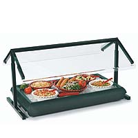

#4148 1 2005-08-22T13:46:07Z Pitch Got this game yesterday, and I'm already spewing out maps that may or may not suck. Tell me what you think of mine ( feedback appreciated).
Adius#93290 4 2005-08-22T18:09:58Z Pitch ^ tx
#4150 1 2005-08-22T18:32:46Z Pitch (copied from the txt)
1. Press [L] to pull up the textboxes. Paste level data into the upper text box, paste demo data into the lower text box.
2. Press [L] to load your level.
3. Press [3] to load your demo.
4. Press [Q] to initiate playback of the demo.
5. Press [P] to start viewing the demo.
6. Make sure caps lock is on!
I do this exactly, but when I press "P" it doesn't start the demo. Instead it starts as though I am going to play the level, doesn't do anything unless I press to move and jump. Something I'm doing wrong?
#93304 33 2005-08-22T18:51:31Z Pitch I also came to the downloadable version through ebaumsworld. I knew there was a map editor somewhere, so I clicked the annoying black button which covered up my screen in the bottme right corner and now here I am.
#93308 3 2005-08-22T19:02:20Z Pitch Thats what I do. Just put the L in there because it was in the manual. Is there some setting that I need to tamper with?
#93312 5 2005-08-22T19:34:59Z Pitch $Belligerently Rustic#nevermore#Action#A0>15000000000000000006000500000000000000000000000000000000000000000?0000000000000NP0000000C0000000000000000000000200000000000000000000000000000000000000000000000000000000000000000000000000030000000000000000000000100000000000000C0000000F00000000000000100000000000000CP00000010400000000000?5000000?101@000000000000000000NB01M000000000000000000CN000000000000000000000P001L000000000000000000BN01A000000000000000000NC0500000000000>4000000>100000000000000BP00000010000000G0000000000000010000000100000000000000B000000020000000000000000000000000000000000000000000000000000000000000000000000000000000000000000000000000000000000030000000000000NP0000000B0000000000000000000000>00040000000000000000000@0?14000000000000000007|.......(various numbers with ^ that I deleted to save space)
^ example of one I've tried
#93315 7 2005-08-22T19:57:31Z Pitch Damn being up for 24 hours doesn't do well. I must have read that 10 times and everytime I could have sworn it said 1.4+ demo data. Hehe thanks though.
#93351 56 2005-08-22T22:39:32Z Pitch Gave the fantastic floor...guards a 4/5. It had a nice layout and good flow.
Map I want rated is
Oriental#93387 5 2005-08-23T01:35:18Z Pitch Heres another, looking for ways to improve it before I post it on NUMA.
Attachment (lost): post-10-1124804242.txt
#4161 1 2005-08-23T17:44:08Z Pitch I actually have a few ideas, which all have probably been suggested before. After reading most of the suggestion topics, it seems that almost every idea has been suggested before at one time or another. Anyways heres mine.
1. "poison gold" - a different colored gold thing that subtracts 2 seconds instead of adds two.
2. "enhancements" - different colored gold pickups which could enhance N for a short period of time. For example a speed boost or no enemy detection.
3. "moving rocket" - have a mobile enemy who uses the same attack as the homing launcher.
4. "moving gauss" - same as above only with a gauss shooter.
5. "multi-weapons" - (although I doubt this is possible) enemies with more than one attack. For example a laser drone that can also shoot rockets.
6. Different kinds of blocks to use in levels, not larger, but with different shapes than the ones we have now. A triangle for instance.
7. "switches" - doors that can have more than one switch, or can have switches that lock them.
8. "laser switches" - switches that turn on a laser trap similar to the laser drone's attack.
9. Add a sticky in the suggestions forums containing the most commonly posted suggestions and why they are or aren't good ideas.
Thats all that I have, would like some feedback on them. If you don't like them please put an explanation why also.
#93990 5 2005-08-25T14:31:52Z Pitch If you can stand them I have 2 more (I did a search and didn't find anything on any of them).
10. "Moving Blocks" -squares that can move in the same ways that drones do (same pathing editor also)
11. "Timed doors" -doors that close after a certain amount of time.
#4314 1 2005-09-06T02:28:27Z Pitch Need some help with my DDA. While it works fine for me every time I run it, it messes up and kills N for everyone else. Is there some way to fix it?
Attachment (lost): post-10-1125973707.txt
#97871 5 2005-09-06T06:23:45Z Pitch yeah I put enemies first
#98570 27 2005-09-08T02:17:54Z Pitch Put me on the list

#4345 1 2005-09-09T04:56:52Z Pitch Got this idea from another thread but I think it's a great idea. There should be a section for unrated maps that sorts them from how many votes they need to be rated (one vote at the front, five at the back). Then all the ones, twos .... fives are sorted from oldest to newest, so you get the oldest map that only needs one more rate first, and the newest map that needs five more last.
Personally, whenever I see a 1 I just go ahead and rate it, showing many ones at once may get many more maps rated.
#99366 2 2005-09-11T00:29:28Z Pitch no
#99470 11 2005-09-11T04:14:53Z Pitch I'm going to hijack my own thread and pose another suggestion. With so many rating problems on numa, voting should be scaled so that those with a higher average map rating should have a larger impact when they vote than those that don't. I don't exactly have the math figured out for something like this, but it could be useful if implemented.
That and the amount of ninjas should be increased to 10, still keeping the half ninjas.
I'm tom and I'm just full of ideas.....
#99639 162 2005-09-11T18:10:25Z Pitch Think I rated every map on this page. Got two to submit
Dialysis
-need 1 vote
Reaganomics
-needs 2 votes
#100438 64 2005-09-14T00:54:33Z Pitch Dubliners
First submission, too bad noone on Numa rated it so I can't tell whether other people like it (I do though).
#101506 12 2005-09-18T02:23:37Z Pitch Would have rated Atilla's feared hand 4/5. It flowed decently and was very fun to play. My only real problem with it is the corners. It seems unnecessary to have all those doors there. By the time they are all unlocked it can get a little aggravating to finish it. Perhaps just have four exits in each of the so that by completing one you could finish it faster. With this adjustment I would easily rate it 4.5/5
Heres my map
Attachment (lost): post-10-1127010217.txt
#102231 193 2005-09-19T23:43:43Z Pitch Got a lucky 7 maps here, suffice to say my 7 recent maps.
Droll - 2
Dubliners - 4
Quarks - 3
Transparency - 5
Flourescent - 4
Flakes - 1
Xanadu - 5
My favorites from the bunch are Quarks, Dubliners, Xanadu and Flourescent. Although, your opinions may differ..
(yes I rated 7+)
Edit - That is what I meant
#102769 17 2005-09-22T13:40:48Z Pitch man none of you act like people you all act like clowns but that ipod thing i was thinkg the same thing
And you say you aren't an idiot

#104146 109 2005-09-27T23:55:20Z Pitch Looks like my submission has been ignored....
#104828 72 2005-10-01T23:17:37Z Pitch All this over a freeware game with maybe 100 active players online

#105317 72 2005-10-04T00:34:22Z Pitch Think my request was ignored...
#105416 6 2005-10-04T05:23:33Z Pitch exact same thing happened to me atticus.
#105828 10 2005-10-06T01:32:03Z Pitch Just wondering, is this daily, weekly or whenever someone feels like it kind of thing?
#105853 12 2005-10-06T04:35:12Z Pitch My first, so logically my best (and worst)
IronMuffins#4631 1 2005-10-06T06:48:45Z Pitch I know some people don't think much of ratings, but I am still new enough to care. Thought a few suggestions which may limit snipers.
1. If you are going to rate a map less than 3, you are forced write a something in the feedback slot and submit it first. While people could still lie with this, it could still give a general idea of who some snipers are.
2. Show who voted and what he voted for on a map, and the time/date he voted. Could be shown to everyone or just the mapmaker. I really don't see any negative aspects to this. If you are going to rate a map down the mapmaker at least has a right to see who does it. The only problem I see is with maps with 128 or so votes, but this could just have the voters names and numbers sorted..
3. Moderators who can see all the votes in any map along with date/time.
There may be some problems I can't think of yet so feedback is nice.
Oh and sorry if these have been suggested before but the search button's usefulness is extremely limited.
#105946 7 2005-10-06T13:29:20Z Pitch Well Tetris there is a simple solution, just don't rate bad maps.
#105952 10 2005-10-06T14:43:09Z Pitch Sorry about that, on a school computer.
#106267 34 2005-10-07T23:18:32Z Pitch Just thought I'd sum up all the problems (I can't think of anymore, maybe move onto solutions some time soon?)
1. Slack members, who only look for certain names or 'pretty' tilesets.
2. the Newest page is almost becoming obsolete. There are so many maps submitted each day that they often go unrated.
3. People giving extreme ratings to maps, either snipering with very low scores or over-rating with very high scores.
4. People have recently been swearing in comments, or otherwise being very dirty in their maps or presence.
5. Members have followed certain authors, and give their maps 0s, no matter what. They wait for a new map, just to crap on it. (similar to 3)
6. Only 10 Maps allowed on a page
7. It is currently too easy to cheat the rating system, whether by multi-accounting or by other means.
8. NUMA n00bs aren't educated enough about N and how to make good maps.
9. People just don't know what constitutes a good map. A map that isn't fun in the least bit/has had all of thirty seconds dedicated to making it is given a five by someone, while a well thought out highly fun map is given a three, because they 'don't think the room looks pretty enough' or something along those lines.
10. On many maps too many people vote without leaving a comment
11. Some noobs go about commenting on other people's maps, giving crud advice that will actually make them worse instead of better
12. Ratings don't reflect the actual map itself, they're mostly based on the author's popularity(hehe, I'm innocent!), overratings, underratings, and eh, cheating.
(copy and paste)
#106333 23 2005-10-08T06:12:55Z Pitch October 7th, 2005
Weather: Overcast with low chance of rain, low winds of up to 6 bad maps per hour.
Starting off with my personal favorite of the day
Zenith by Barabajagal. Hard mine jumper with a great tileset and feel to it. A few came close though...
Honorable Mentions:
Trent - Aju, also one of the best today; a bit east but still enjoyable.
The Day My Lava Lamp Exploded - Formica, interesting name and interesting gameplay to boot.
eight-track - astheoceanblue, fun if uninspired. Still needs a few votes for rating.
User-friendly - Bigblargh, although a race it could still use a gauss turret or two, still fun.
Mandragora Others may not agree with me but I found little to complain about this map.
Stinker of the day:
Super Hard Map Aside from terrible gameplay, having no flow and being overly cluttered with absolutely useless objects, this is a resubmission of an almost identical map made right before it. Both of these atrocities are still there.
However, looking forward to the weekend there is a chance of shine...
(Didn't feel right to post any of my maps...)
#106518 27 2005-10-08T23:10:49Z Pitch Don't post old maps. If you are doing one on the 8th of October post maps made on 8th of October.
#107293 249 2005-10-11T13:46:06Z Pitch Think I rated every one on this page, although I may not have left comments on all
Out of Ivy League - 3 votes
Scrap - 1 vote
The Conflict of Squaw - 1 vote
Peyote - 1 vote
Numerical Decisiveness - 3 votes
#4759 1 2005-10-14T02:47:38Z Pitch Seems like a more custom episodes have come out lately so I'm going to add one of my own.
0-0 Desolace
0-1 Wounded
0-2 Patronage
0-3 Circumscribed
0-4 Return of the Native
Desolace and Circumscribed were inspired from other maps I viewed...
Attachment (lost): post-10-1129258058.txt
#108180 41 2005-10-14T03:43:58Z Pitch Something that at first I didn't believe but now do...
Parents have little to no effect on how their child's personality will end up being. It's almost 50% hereditary and 50% dependent on the child's peers...
#108188 2 2005-10-14T04:31:46Z Pitch Put it on Numa. Having a map that isn't "up to Numa snuff" doesn't amount to much since most of the recent maps are terrible. I'm glad to find any map worth playing, and if you posted this it would easily get 4-4.5
#108596 5 2005-10-15T21:12:57Z Pitch Episode 1-0 is finished....
1-0 Attraction
1-1 Haggard Cliffs
1-2 Tydes
1-3 Starfall
1-4 Quantized
Attachment (lost): post-10-1129410777.txt
#108597 306 2005-10-15T21:48:41Z Pitch 
Blocked (sneezeguard)
#108649 1672 2005-10-16T03:17:15Z Pitch Black and White
#108677 1675 2005-10-16T04:50:23Z Pitch one of my fav sega games
Attachment (lost): post-6-1129438223.jpg
#108678 8 2005-10-16T04:52:00Z Pitch Thats wierd, I enjoyed these maps a bit more than my first episode...
#108685 30 2005-10-16T05:27:35Z Pitch I agree with Barabajagal mostly. Bing Bong was definetely the most fun of the pack, but I also enjoyed slave to the lamp. Something about having plenty of objects cluttered while still having a good amount of moving space is something I've always liked.
The map I liked the least was Groggy. It was still nice, but the center just seemed a bit off from the rest of the map. It feels like you switched themes while making this map a few times...
I think I may have messed up with the names of a few of these maps, the code was a bit misleading (I never did get dessert to work).
#108692 1677 2005-10-16T05:49:46Z Pitch hehe I wasn't sure how popular it was, probably should have just shown one dandelion...
Attachment (lost): post-6-1129441786.jpg
#108740 1681 2005-10-16T16:51:29Z Pitch contra?
#108889 310 2005-10-17T04:40:10Z Pitch #108919 5 2005-10-17T13:46:05Z Pitch You can already filter when you are in newest by clicking the sections on top.
#109490 7 2005-10-21T04:03:58Z Pitch foresty?
#109623 9 2005-10-22T02:59:03Z Pitch This seems to prove more that people rate maps without playing them. Anyone who would have played it would have seen it was terrible, but instead they felt they would just go along with the crowd for some reason. I also admit that I would probably have rated it higher if I hadn't tried it out first given mostly on the person.
#109713 1693 2005-10-22T18:01:11Z Pitch if Tornado doesn't post one soon I will, you have til the end of today...
#109882 1698 2005-10-23T04:32:16Z Pitch Alright times up....
This is my absolute favorite game. Beaten it so many times I lost count.
For sega
Attachment (lost): post-6-1130041936.jpg
#110064 1700 2005-10-23T22:15:17Z Pitch it's for the sega genesis
#110131 354 2005-10-24T03:49:02Z Pitch Take on Me - A-Ha
#110334 3 2005-10-25T02:28:13Z Pitch Fleas
Adam Had'em
#110342 1702 2005-10-25T04:06:04Z Pitch yep
Attachment (lost): post-6-1130213164.jpg
#110764 4 2005-10-27T04:26:52Z Pitch Gonna suck without ya...
We should seriously just make another site and move without telling anyone else...
#111046 720 2005-10-28T05:02:02Z Pitch Granted, but the balancing mechanism would break and you would get a mouthful of cement.
I wish Numa didn't have any bad mapmakers..
#111204 10 2005-10-29T01:24:25Z Pitch Episode 0-2 is out...
2-0 - Underbelly
2-1 - Cloudy
2-2 - Bound
2-3 - Hard Times
2-4 - Unhappy Inc.
Attachment (lost): post-10-1130549065.txt
#111205 331 2005-10-29T01:30:31Z Pitch Never said I had to draw it myself

I am the king. The first person to find the derivative of x^2sin(x^2) is the new king.
Attachment (lost): post-6-1130549431.gif
#112234 161 2005-11-04T02:19:44Z Pitch Before I do my part, am I next or is there some order confusion?
#5064 1 2005-11-06T05:22:27Z Pitch Only been back a few hours and this guy is already making me sick. He's posting ridiculously bad maps on purpose and it is very likely he is sniping many members maps. He offers nothing to the Numa community, and if anyone ever deserved to be banned, he is the guy.
We need signatures...
#112914 164 2005-11-06T18:17:21Z Pitch #113102 26 2005-11-07T17:26:59Z Pitch If he didn't make any maps or leave any comments, you wouldn't ban him, right? You wouldn't know who he is and couldn't do a damn thing about his conduct. In essence, he's no worse than any other sniper; however, because you all know his identity, he is ripe to be made an example of.
Go ahead and ban this guy. We ban everyone else. If we gave more snipers the encouragement to make their own maps and make themselves known in the community, we could ban them, too. I mean, if we're going to ban Killer and Kemikal and Craftymerchant (and anyone else who becomes unacceptable to our close-knit community), we may as well ban this guy (whom I've never heard of) also.
Be warned evil-doers! NUMA Community Watch is in effect.
If you him continue sniping maps, it could result in the loss of a valuable Numa member. If you had to choose between unoyouwantacookie and someone who actually does something for Numa, which would you pick?
#113377 37 2005-11-09T06:28:18Z Pitch Blue Tetris, you aren't nearly as smart as you act, and I soon hope you find that writing *confusing* arguements won't garnish respect.
First of all, there is an "if" in my statement making it a hypothetical situation. It was a rhetorical question, but apparently you didn't interpret it that way. Instead you go into this whole philosophical bullshit about how we are a bunch of dicks.
Second of all, this isn't a plea to ban all mapmakers. Just one very annoying, very over the line mapmaker who is annoying many other residents of Numa. This isn't protecting a dying child, it's removing a wart.
You then jump into some more philosophical bullshit to distract from whats really at hand; A single person. You bring in a reference to killer that really does nothing for your arguement. And please explain to me, who are the self-described veteran, who's the comunally labeled n00b? If I make a thread describing a course of action I am immediately a "self-described" veteran? While it is true that many things that new players say are shot down very quickly, it is almost always for very common and stupid mistakes. The suggestions thread is constantly bombarded with suggestions that have been mentioned hundreds of times. If the noobs didn't want to get bashed they could read the damn sticky. But, you are only focusing on the negative things. If someone posts a good idea it is praised; funny how you leave this out.
You and I (the elite overlords) have every form of control over these peons. Killer, unouwantacookie, and kemikal are at our mercies. We can decide whatever we like about them. Kemikal made a shitty map, we all bashed it, he bashed us, and we banned him for not accepting our profanity-laden advice--helpful as it was. I think we already have all the power the community can offer us. Now that I'm done with my rant, go ahead and ban whomever you like. Piss them off sufficiently and they'll give you a shitload more reasons to ban them, just incase you need to prove your case.
No, you and I have little to no power over these "peons". The only person who has any power is arachnid. If you, Blue Tetris, where to start a thread asking the banning of someone, it would not instantly succeed. It would take many agreements from other players before it even got close to swaying Arachnid into doing something.
You then proceed to call EVERY member a fascist. WTF is wrong with you? Not only is this a terribly stereotypical view, but it's dead wrong. It's more of a democratic dictatorship, with one man having the power and the community trying to sway him. And, who gives a damn how you make your maps? I follow pretty much the same approach, and have gotten steady 4's and 4.5's for my last who knows maps. But it isn't as though I'm respected because I can slap together a few maps, it's my maps that are respected. It's the same for you, and why you, alone, can't sway everyone who wants unouwantacookie banned.
The purpose of this was just to tear down Blue Tetris's arguement piece by piece. I may not have done the best job, but it's 11:30 when I read this and I am dead tired.
All this being said, I still support the banning of unouwantacookie and laugh at what a dramatic event this small thing has become.
#113441 43 2005-11-09T20:30:46Z Pitch Blue, the first thing I said wasn't meant to be much of an insult. It just bugs me when people purposely write confusing arguements when they easily simplify it. I suppose when I think about it, deep down I realize that this community is almost dead and I'm doing what little I can to try and save it.
#114944 1783 2005-11-14T17:39:34Z Pitch red alert?
#115352 22 2005-11-16T02:32:52Z Pitch I support it, but predicting how this will change Numa is very difficult...
#131588 448 2006-01-11T05:04:39Z Pitch Was me ^
#131590 143 2006-01-11T05:22:08Z Pitch In light of this thread I am going to post my favorite riddle I've ever come across (I would answer ones in the thread if I knew which one was the most recent)
Petals around the rose
A few things about this
1. DO NOT POST THE SOLUTION NO MATTER HOW MUCH SOMEONE BEGS. Send a personal tell to him if he desperately needs it.
2. Three things are given along with this puzzle but aren't shown on this webpage.
- The name is important
- There is only one answer from any given roll of the dice
- The answer is always even
#131592 83 2006-01-11T05:37:56Z Pitch too bad my favorites change all the time
Life's Been Good - Eagles
Everybody wants to rule the world - Tears for Fears
Who I am Hates who I've been - Relient K
Everything is alright - Motion City Soundtrack
#134571 52 2006-01-22T05:42:28Z Pitch If you're all lazy to check the first post, here are the rules again:
Post other people's maps (not your own) that you think deserve a better rating here. Preferably maps 3.5 or under. Same as the Map Rating Thread; you post a map, you rate a map.
#134802 493 2006-01-22T22:28:36Z Pitch #135196 9 2006-01-23T21:37:38Z Pitch Overrated
Shouldn't be top map nor a 4.5
#135276 510 2006-01-24T00:26:40Z Pitch Here is my epic part so far: The only things I haven't worked out is whether to keep the thwumps and a better way to perfect the lazer drone's pathing. Suggestions, compliments or flames, please.
The thwumps aren't necessary and should be removed. Also, the gauss isn't in a very dangerous position where it is, maybe move it up a few so it can hit between the cracks. And the last thing is that I think N has to start on the far right of the screen.
#135574 518 2006-01-24T23:03:21Z Pitch Some things
Ultima, your map has many of the same problems your earlier one did. Don't hide trap doors under gold, ever. If you remember the maps are also supposed to look something like real world terrain. I have no idea what yours is supposed to represent.
#135679 20 2006-01-25T06:19:48Z Pitch Adius
WOOOOOOOOOOOOHHHHHHH
I had no clue where I came up with it
I find it sad I still can't beat it, come to think of it I can't beat 80% of my maps
Though I did beat N
#144892 99 2006-02-17T15:33:19Z Pitch Apache, your map isn't underrated. In fact, it deserves lower than a two. Those who gave it zeros weren't sniping, they just really hated your map; like I do.
And again Apache the point of this thread isn't to "plz go to my map and rate high".
#9517 1 2006-06-16T19:21:09Z Pitch Yeah its been a while but heres a new episode since I am going to be away for a bit.
1-0: Something Overlooked
1-1: Graduation
1-2: A Little of a Lot
1-3: Crazy
1-4: Invasion
Enjoy and please comment.
Attachment (lost): post-10-1150485669.txt
#195642 83 2006-06-28T04:07:20Z Pitch Is NaN'ing a laser drone so that it doesn't move considered a bug?
#196718 642 2006-06-30T05:11:44Z Pitch ^Banned for mispelling shark
#197633 95 2006-07-01T23:16:11Z Pitch I just finished my episode also. Give it a whirl, I hope you enjoy it.
Attachment (lost): post-21-1151795771.txt
#211256 31 2006-08-04T06:27:28Z Pitch My best map - my seventh map (maybe I peaked too early?)
And one of my favorite maps on numa in general
http://numa.notdot.net/map/12833#280906 51 2007-01-04T02:09:23Z Pitch Im in
Edit: I just realized im going to miss next monday due to an 8 hour drive, hopefully next week
#282820 16 2007-01-08T03:42:59Z Pitch same kinda thing happened to me. All I got was a blank map
Kinda peeved me
#13743 1 2007-01-28T07:12:48Z Pitch I'm looking for another free ware game (preferably one with some online activities). Hopefully, also one that will keep my interest as long as N did.
#290841 3 2007-01-28T07:30:28Z Pitch Soldats exactly the kind of thing I'm looking for, thanks for the link